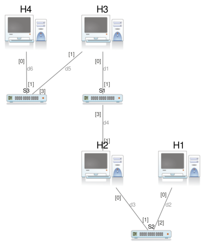
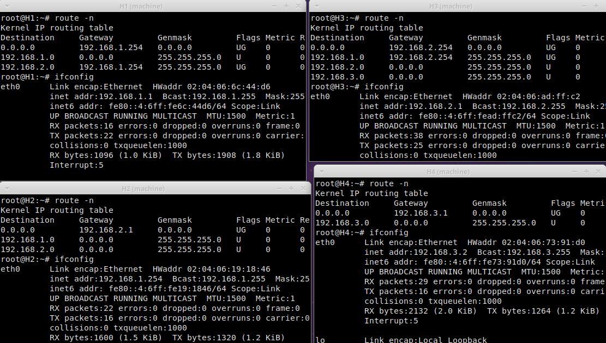

Reti, LAB-routing, es. 1
Table of contents
1 Setup iniziale
L'idea è quella di estendere la topologia già presentata nel laboratorio precedente, realizzando una configurazione come questa: 
2 Attivazione dei router
Per prima cosa, è opportuno attivare il forwarding dei pacchetti IP dei dispositivi che fungeranno da router in questa configurazione, quindi H2 e H3. Per farlo, si usa il comando
sysctl -w net.ipv4.ip_forward=1
3 Configurazione di LAN3
H4 si configura normalmente con ifconfig eth0 192.168.3.2/24.
Occorre anche configurare la seconda interfaccia di rete di H3,
con ifconfig eth0 192.168.3.1/24.
4 Routing
Si possono seguire i seguenti passaggi logici:
- Impostare H3 come default gateway in H2: in tal modo
H2 saprà cosa fare dei pacchetti destinati a LAN3.
Da H2, lanciare
route add default gateway 192.168.2.1; - Impostare H3 come default gateway in H4.
Da H4, lanciare
route add default gateway 192.168.3.1;
H1 nella mia precedente configurazione era già impostato per avere come default gateway H2, quindi è già in grado di comunicare con l'esterno. Ecco le tabelle di routing e le configurazioni delle interfacce degli host a fine procedimento: 